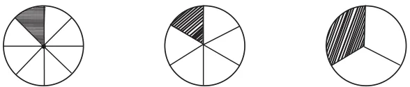
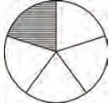
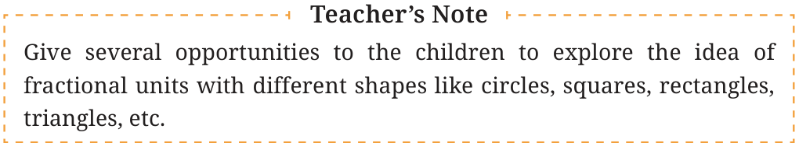

<!DOCTYPE html>
<html lang="en">
<head>
<meta charset="UTF-8">
<meta name="viewport" content="width=device-width,initial-scale=1">
<title>Figure it Out — Fractions</title>
<meta name="description" content="Class 6 Mathematics · Fractions · Figure it Out">
<link rel="icon" href="data:image/svg+xml,<svg xmlns='http://www.w3.org/2000/svg' viewBox='0 0 100 100'><text y='.9em' font-size='90'>📘</text></svg>">
<link rel="stylesheet" href="../../../assets/book.css">
<link rel="stylesheet" href="https://cdn.jsdelivr.net/npm/katex@0.16.11/dist/katex.min.css" crossorigin="anonymous">
</head>
<body>
<header class="topbar">
<div class="topbar-in">
  <div class="crumb">
    <span class="c1"><a href="../../../index.html">Library</a> · <a href="../../index.html">Class 6 Mathematics</a></span>
    <span class="c2">Fractions · Figure it Out</span>
  </div>
  <a class="tb-btn" data-nav="prev" href="../../07-fractions/06-measuring-using-fractional-units-7.3/index.html" title="7.3 Measuring Using Fractional Units">←</a>
  <details class="drawer"><summary class="tb-btn" title="Sections in this chapter">☰</summary>
<div class="drawer-panel"><div class="dh">Fractions</div><a href="../01-chapter-opener/index.html">Chapter opener</a><a href="../02-fractional-units-and-equal-shares-7.1/index.html">7.1 Fractional Units and Equal Shares</a><a href="../03-figure-it-out/index.html">Figure it Out</a><a href="../04-fractional-units-as-parts-of-a-whole-7.2/index.html">7.2 Fractional Units as Parts of a Whole</a><a href="../05-figure-it-out/index.html">Figure it Out</a><a href="../06-measuring-using-fractional-units-7.3/index.html">7.3 Measuring Using Fractional Units</a><a href="../07-figure-it-out/index.html" aria-current="page">Figure it Out</a><a href="../08-marking-fraction-lengths-on-the-number-line-7.4/index.html">7.4 Marking Fraction Lengths on the Number Line</a><a href="../09-figure-it-out/index.html">Figure it Out</a><a href="../10-mixed-fractions-7.5/index.html">7.5 Mixed Fractions</a><a href="../11-figure-it-out/index.html">Figure it Out</a><a href="../12-figure-it-out/index.html">Figure it Out</a><a href="../13-figure-it-out/index.html">Figure it Out; 7.6 Equivalent Fractions</a><a href="../14-figure-it-out/index.html">Figure it Out</a><a href="../15-figure-it-out/index.html">Figure it Out</a><a href="../16-figure-it-out/index.html">Figure it Out</a><a href="../17-figure-it-out/index.html">Figure it Out</a><a href="../18-figure-it-out/index.html">Figure it Out; 7.7 Comparing Fractions</a><a href="../19-figure-it-out/index.html">Figure it Out</a><a href="../20-addition-and-subtraction-of-fractions-7.8/index.html">7.8 Addition and Subtraction of Fractions</a><a href="../21-figure-it-out/index.html">Figure it Out</a><a href="../22-figure-it-out/index.html">Figure it Out</a><a href="../23-figure-it-out/index.html">Figure it Out</a><a href="../24-a-pinch-of-history-7.9/index.html">7.9 A Pinch of History</a><a href="../25-solutions/index.html">CHAPTER 7 — SOLUTIONS</a></div></details>
  <a class="tb-btn" data-nav="next" href="../../07-fractions/08-marking-fraction-lengths-on-the-number-line-7.4/index.html" title="7.4 Marking Fraction Lengths on the Number Line">→</a>
  <button class="tb-btn" data-theme-toggle title="Toggle light / dark" aria-label="Toggle light or dark theme">◐</button>
</div>
<div class="progress"><span style="width:58.2%"></span></div>
</header>
<main class="wrap">
<div class="sec-head">
  <p class="eyebrow"><a href="../index.html">Chapter 7 · Fractions</a></p>
  <h1>Figure it Out</h1>
  <p class="sec-meta">Textbook pages 8–9 · 6 figures</p>
</div>
<article class="prose">
<p>Figure it Out</p>
<ul class="qlist">
<li><span class="mk">1.</span><span class="lt">Continue this table of \(\frac{1}{2}\) for 2 more steps.</span></li>
<li><span class="mk">2.</span><span class="lt">Can you create a similar table for \(\frac{1}{4}\) ?</span></li>
<li><span class="mk">3.</span><span class="lt">Make \(\frac{1}{3}\) using a paper strip. Can you use this to also make 1_{6} ?</span></li>
<li><span class="mk">4.</span><span class="lt">Draw a picture and write an addition statement as above to show:</span></li>
<li><span class="mk">a.</span><span class="lt">5 times \(\frac{1}{4}\) of a roti b. 9 times \(\frac{1}{4}\) of a roti</span></li>
<li><span class="mk">5.</span><span class="lt">Match each fractional unit with the correct picture:</span></li>
</ul>
<p>\(\frac{1}{3} \frac{1}{5} \frac{1}{8} \frac{1}{6}\)</p>
<figure class="fig"></figure>
<figure class="fig side-fig"></figure>
<p>Reading Fractions</p>
<p>We usually read the fraction \(\frac{3}{4}\) as ‘three quarters’ or ‘three upon four’, but reading it as ‘3 times \(\frac{1}{4}\) ’ helps us to understand the size of the fraction because it clearly shows what the fractional unit is ( \(\frac{1}{4}\) ) and how many such fractional units (3) there are.</p>
<p>Recall what we call the top number and the bottom number of fractions. In the fraction \(\frac{5}{6}\) , 5 is the numerator and 6 is the denominator.</p>
<figure class="fig wide"></figure>
</article>
<nav class="pager"><a class="" data-nav="prev" href="../../07-fractions/06-measuring-using-fractional-units-7.3/index.html"><span class="dir">← Previous</span><span class="t">7.3 Measuring Using Fractional Units</span><span class="ch">Fractions</span></a><a class="nx" data-nav="next" href="../../07-fractions/08-marking-fraction-lengths-on-the-number-line-7.4/index.html"><span class="dir">Next →</span><span class="t">7.4 Marking Fraction Lengths on the Number Line</span><span class="ch">Fractions</span></a></nav>
</main><footer class="site">Generated from the source textbook PDFs · text, figures and exercises belong to their respective publishers.</footer><script defer src="https://cdn.jsdelivr.net/npm/katex@0.16.11/dist/katex.min.js" crossorigin="anonymous"></script>
<script defer src="https://cdn.jsdelivr.net/npm/katex@0.16.11/dist/contrib/auto-render.min.js" crossorigin="anonymous"
  onload="renderMathInElement(document.body,{delimiters:[
    {left:'\\(',right:'\\)',display:false},
    {left:'$$',right:'$$',display:true},
    {left:'\\[',right:'\\]',display:true}],throwOnError:false,ignoredTags:['script','noscript','style','textarea','pre','code']})"></script>
<script src="../../../assets/book.js"></script>
<script defer src="../../../../assets/search.js"></script>
<script defer src="../../../../assets/screenshot.js"></script>
</body>
</html>
